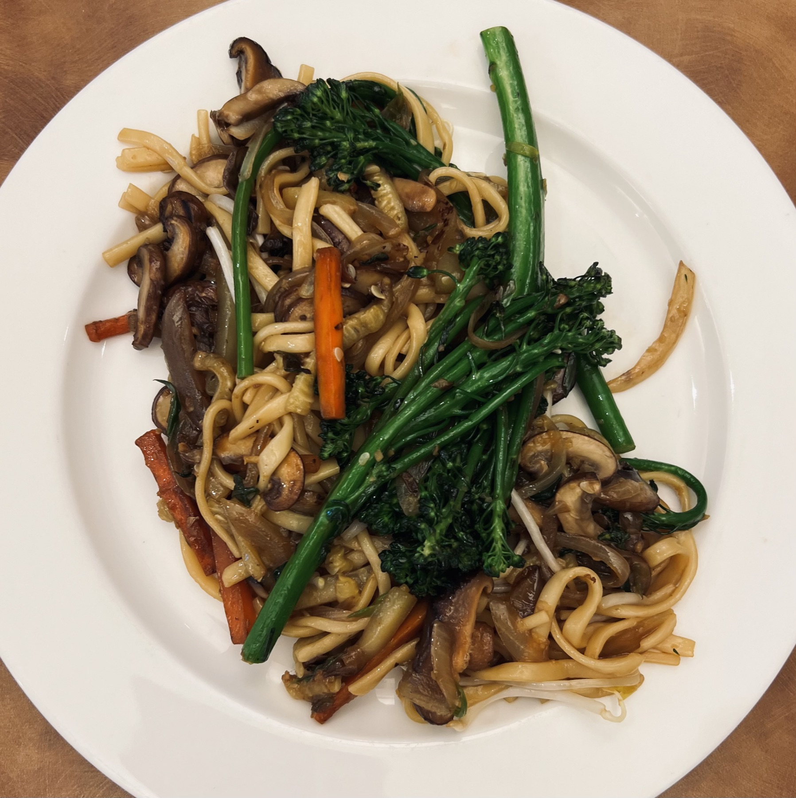

Shanghai Pan-Fried Noodles
The second family meal from Week 2. High heat, dark soy, ginger, and bok choy. The noodles go in last and get a tight cover so they steam and color at the same time.

Yield: 4–6 servings
Ingredients
- 1 lb fresh thick Shanghai noodles (sub: Japanese udon or Korean knife-cut noodles, strands loosened)
- 4 tbsp neutral cooking oil
- 1½ tbsp ginger, fine julienne
- ½ oz dried shiitake mushrooms, soaked and sliced (6–8 mushrooms)
- 1 lb choy sum or baby bok choy, sliced
Sauce
- ½ cup water
- ½ tsp salt
- 1 tsp sugar
- 1 tbsp light soy sauce
- 2–3 tbsp dark soy sauce
- ¼ tsp white pepper
Garnish
- 1 tsp toasted sesame oil
- 3 green onions, cut into 2-inch lengths
- Chinese black vinegar for serving (optional)
Directions
- Bring a large pot of water to a boil. Add 1 lb loosened noodles, stir, and return to a boil. Add 1 cup cold water, cover, and cook on low heat 6–8 minutes until al dente. Drain, run under cold water to stop cooking, and toss in a little oil to prevent sticking.
- Mix together all sauce ingredients — ½ cup water, ½ tsp salt, 1 tsp sugar, 1 tbsp light soy sauce, 2–3 tbsp dark soy sauce, and ¼ tsp white pepper — and set aside.
- Heat a wok or large skillet over high heat. Add 2 tbsp oil.
- Add 1½ tbsp ginger, the soaked and sliced shiitake mushrooms, and 1 lb bok choy, then add the noodles. Pour the sauce around the edges of the noodles. Cover tightly and cook 6–8 minutes.
- Uncover and toss noodles and vegetables until well coated and evenly colored. Stir-fry until piping hot and the sauce has reduced.
- Finish by tossing in 3 green onions and 1 tsp sesame oil.
- Serve with Chinese black vinegar on the side if desired.